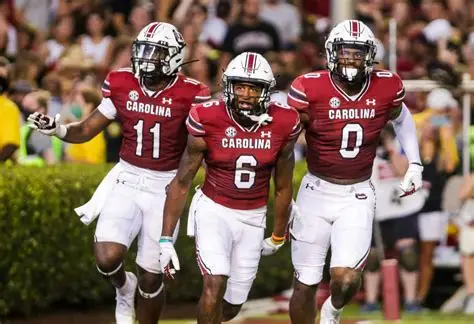
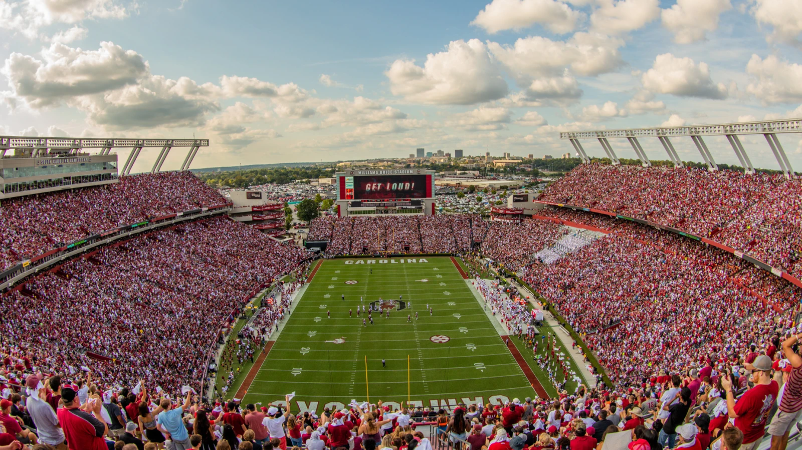

The University of South Carolina Gamecocks football team is an integral element of the school's sporting tradition. The team represents the university in the Southeastern Conference and has a devoted fan base throughout South Carolina. Throughout the season, students, alumni, and other supporters gather to cheer on the Gamecocks. Gamecock football allows fans to exhibit their pride in their university while also connecting with other team supporters.
Many Gamecock supporters look forward to attending games at Williams-Brice Stadium. Prior to start, the stadium fills up with spectators dressed in garnet and black. Fans like the enthusiasm in the stands, the team's traditions, and spending time with friends and family. The atmosphere makes Gamecock football games unforgettable, whether the team is playing at home or preparing for a big game.
| Gameday Item | Description |
|---|---|
| Stadium | The name of our beloved Gamecock Football stadium is Williams-Brice Stadium. |
| Team Colors | The Gamecock Football team colors are garnet and black. |
| Fan Tradition | A popular fan tradition is tailgating before a USC football game. |

